library( tidyverse )A Quick Guide to Conducting a Simulation Study
Overview
The code in this document is a series of case studies of simple simulation studies where we examine such things as the behavior of the simple difference-in-means for detecting treatment effect in a randomized experiment.
The primary purpose of this document is to illustrate how one might generate functions to conduct a simulation given a specific set of parameters, and then build on such functions to explore a range of parameter settings in what we would call multi-factor simulation experiments.
This script shows how you can streamline this using a few useful R functions in order to get nice and tidy code with nice and tidy simulation results.
The first simulation study presented looks at the \(t\)-test under violations of the normality assumption. The second is, essentially, a power analysis. Here we have a single estimator and we are evaluating how it works in a variety of cicumstances. In the third simulation we compare different estimators via simulation by showing a simulation comparing the mean, trimmed mean and median for estimating the center of a distribution.
This script relies on the tidyverse package, which needs to be loaded.
We use methods from the “tidyverse” for cleaner code and some nice shortcuts. (see the R for Data Science textbook for more on this).
Technical note: This script was compiled from a simple .R file. If you are reading the raw file you will notice some “#+” which indicate directives to R code blocks (chunks) in the knitr (R markdown) world. This impacts how the code is run and displayed when turning the R file into a pdf to read. The comments beginning with “#'” are interpreted as markdown when the document is complied in RStudio as a notebook via knitr:spin() to make the pretty tutorial pdf.
Simulation 1: the performance of the \(t\)-test
We will start with a simulation study to examine the coverage of the lowly one-sample \(t\)-test. Coverage is the chance of a confidence interval capturing the true parameter value. Let’s first look at our test on some fake data:
# make fake data
dat = rnorm( 10, mean=3, sd=1 )
# conduct the test
tt = t.test( dat )
tt
One Sample t-test
data: dat
t = 9.6235, df = 9, p-value = 4.92e-06
alternative hypothesis: true mean is not equal to 0
95 percent confidence interval:
2.082012 3.361624
sample estimates:
mean of x
2.721818 # examine the results
tt$conf.int[1] 2.082012 3.361624
attr(,"conf.level")
[1] 0.95For us, we have a true mean of 3. Did we capture it? To find out, we use findInterval()
findInterval( 3, tt$conf.int )[1] 1findInterval() checks to see where the first number lies relative to the range given in the second argument. E.g.,
findInterval( 1, c(20, 30) )[1] 0findInterval( 25, c(20, 30) )[1] 1findInterval( 40, c(20, 30) )[1] 2So, for us, findInterval == 1 means we got it! Packaging the above gives us the following code:
# make fake data
dat = rnorm( 10, mean=3, sd=1 )
# conduct the test
tt = t.test( dat )
tt
One Sample t-test
data: dat
t = 7.4137, df = 9, p-value = 4.044e-05
alternative hypothesis: true mean is not equal to 0
95 percent confidence interval:
1.905361 3.578720
sample estimates:
mean of x
2.742041 # evaluate the results
findInterval( 3, tt$conf.int ) == 1[1] TRUEThe above shows the canonical form of a single simulation trial: make the data, analyze the data, decide how well we did.
Now let’s look at coverage by doing the above many, many times and seeing how often we capture the true parameter:
rps = replicate( 1000, {
dat = rnorm( 10 )
tt = t.test( dat )
findInterval( 0, tt$conf.int )
})
table( rps )rps
0 1 2
27 957 16 mean( rps == 1 )[1] 0.957We got about 95% coverage, which is good news. We can also assess simulation uncertainty by recognizing that our simulation results are an i.i.d. sample of the infinite possible simulation runs. We analyze this sample to see a range for our true coverage.
hits = as.numeric( rps == 1 )
prop.test( sum(hits), length(hits), p = 0.95 )
1-sample proportions test with continuity correction
data: sum(hits) out of length(hits), null probability 0.95
X-squared = 0.88947, df = 1, p-value = 0.3456
alternative hypothesis: true p is not equal to 0.95
95 percent confidence interval:
0.9420144 0.9683505
sample estimates:
p
0.957 We have no evidence that our coverage is not what it should be: 95%.
Things working out should hardly be surprising. The \(t\)-test is designed for normal data and we generated normal data. In other words, our test is following theory when we meet our assumptions. Now let’s look at an exponential distribution to see what happens when we don’t have normally distributed data. We are simulating to see what happens when we voilate our assumptions behind the \(t\)-test. Here, the true mean is 1 (the mean of a standard exponential is 1).
rps = replicate( 1000, {
dat = rexp( 10 )
tt = t.test( dat )
findInterval( 1, tt$conf.int )
})
table( rps )rps
0 1 2
3 905 92 Our interval is often entirely too low and very rarely does our interval miss because it is entirely too high. Furthermore, our average coverage is not 95% as it should be:
mean( rps == 1 )[1] 0.905Again, to take simulation uncertainty into account we do a proportion test. Here we have a confidence interval of our true coverage under our model misspecification:
hits = as.numeric( rps == 1 )
prop.test( sum(hits), length(hits) )
1-sample proportions test with continuity correction
data: sum(hits) out of length(hits), null probability 0.5
X-squared = 654.48, df = 1, p-value < 2.2e-16
alternative hypothesis: true p is not equal to 0.5
95 percent confidence interval:
0.8847051 0.9221104
sample estimates:
p
0.905 Our coverage is too low. Our \(t\)-test based confidence interval is missing the true value (1) more than it should.
Finally, we want to examine how the coverage changes as the sample size varies. So let’s do a one-factor experiment, with the factor being sample size. I.e., we will conduct the above simulation for a variety of sample sizes and see how coverage changes.
We first make a function, wrapping up our specific, single-scenario simulation into a bundle so we can call it under a variety of different scenarios.
run.experiment = function( n ) {
rps = replicate( 10000, {
dat = rexp( n )
tt = t.test( dat )
findInterval( 1, tt$conf.int )
})
mean( rps == 1 )
}Now we run run.experiment for different \(n\). We do this with map_dbl(), which takes a list and calls a function for each value in the list (See R for DS, Chapter 21.5).
ns = c( 5, 10, 20, 40, 80, 160, 320, 740 )
cover = map_dbl( ns, run.experiment )Make a data.frame of our results and plot:
res = data.frame( n = ns, coverage=cover )
ggplot( res, aes( x=n, y=100*coverage ) ) +
geom_line() + geom_point( size=4 ) +
geom_hline( yintercept=95, col="red" ) +
scale_x_log10( breaks=ns ) +
labs( title="Coverage rates for t-test on exponential data",
x = "n (sample size)", y = "coverage (%)" )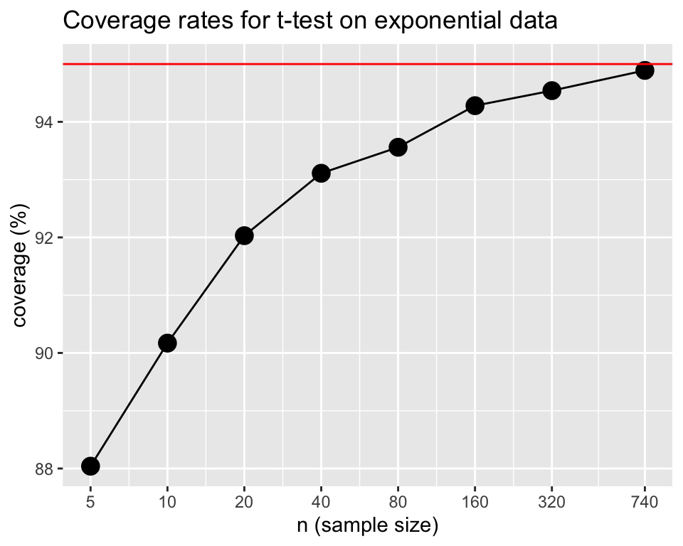
Note the plot is on a log scale for the x-axis.
So far we have done a very simple simulation to assess how well a statistical method works in a given circumstance. We have run a single factor experiment, systematically varying the sample size to examine how the behavior of our estimator changes. In this case, we find that coverage is poor for small sample sizes, and still a bit low for higher sample sizes is well. The overall framework is to repeatidly do the following:
- Generate data according to some decided upon data generation process (DGP). This is our model.
- Analyze data according to some other process (and possibly some other assumed model).
- Assess whether the analysis “worked” by some measure of working (such as coverage).
We next extend this general simulation framework to look at how to very multiple things at once. This is called a multifactor experiment.
Simulation 2: The Power and Validity of Neyman’s ATE Estimate
The way to build a simulation experiment is to first write code to run a specific simulation for a specific scenario. Once that is working, we will re-use the code to systematically explore a variety of scenarios so we can see how things change as scenario changes. Next I would build up this system.
For our running example we are going to look at a randomized experiment. We will assume the treatment and control groups are normally distributed with two different means. We will generate a random data set, estimate the treatment effect by taking the difference in means and calculating the associated standard error, and generating a \(p\)-value using the normal approximation. (As we will see, this is not a good idea for small sample size since we should be using a \(t\)-test style approach.)
Step 1: Write a function for a specific simulation given specific parameters.
Our function will generate two groups of the given sizes, one treatment and one control, and then calculate the difference in means. It will then test this difference using the normal approximation.
The function also calculates and returns the effect size as the treatment effect divided by the control standard deviation (useful for understanding power, shown later on).
run.one = function( nC, nT, sd, tau, mu = 5 ) {
Y0 = mu + rnorm( nC, sd=sd )
Y1 = mu + tau + rnorm( nT, sd=sd )
tau.hat = mean( Y1 ) - mean( Y0 )
SE.hat = sqrt( var( Y0 ) / ( nC ) + var( Y1 ) / ( nT ) )
z = tau.hat / SE.hat
pv = 2 * (1 - pnorm( abs( z ) ))
c( tau.hat = tau.hat, ES = tau / sd, SE.hat = SE.hat, z=z, p.value=pv )
}A single run will generate a data set, analyze it, and give us back a variety of results as a list.
run.one( nT=5, nC=10, sd=1, tau=0.5 ) tau.hat ES SE.hat z p.value
0.3187272 0.5000000 0.5640718 0.5650472 0.5720417 Running our single trial more than once
The following code borrows a useful function from the older plyr package (you may need to install it). It is a version of replicate() that runs a chunk of code a given number of times. The difference is that rdply returns everything as a data frame! Sweet!
eres <- plyr::rdply( 500, run.one( nC=10, nT=10, sd=1, tau=0.5 ) )
# Each row is a simulation run:
head( eres ) .n tau.hat ES SE.hat z p.value
1 1 0.03565861 0.5 0.5436805 0.06558743 0.94770630
2 2 0.73871786 0.5 0.6121659 1.20672812 0.22753687
3 3 0.97355745 0.5 0.4254996 2.28803390 0.02213555
4 4 0.07412129 0.5 0.4580875 0.16180597 0.87145865
5 5 0.63297817 0.5 0.5876732 1.07709211 0.28143912
6 6 -0.62589126 0.5 0.4107228 -1.52387750 0.12753931We then summarize our results with the dplyr summarise function. Our summarization calculates the average treatment effect estimate E.tau.hat, the average Standard Error estimate E.SE.hat, the average Effect Size ES, and the power power (defined as the percent of time we reject at alpha=0.05, i.e., the percent of times our \(p\)-value was less than our 0.05 threshold):
eres %>% summarise( E.tau.hat = mean( tau.hat ),
E.SE.hat = mean( SE.hat ),
ES = mean( ES ),
power = mean( p.value <= 0.05 ) ) E.tau.hat E.SE.hat ES power
1 0.4739842 0.4403337 0.5 0.218We bundle the above into a function that runs our single trial multiple times and summarizes the results:
run.experiment = function( nC, nT, sd, tau, mu = 5, R = 500 ) {
eres = plyr::rdply( R, run.one( nC, nT, sd, tau, mu ) )
eres %>% summarise( E.tau.hat = mean( tau.hat ),
E.SE.hat = mean( SE.hat ),
ES = mean( ES ),
power = mean( p.value <= 0.05 ) ) %>%
mutate( nC=nC, nT=nT, sd=sd, tau=tau, mu=mu, R=R )
}Our function also adds in the details of the simulation (the parameters we passed to the run.one() call).
Test our function to see what we get:
run.experiment( 10, 3, 1, 0.5 ) E.tau.hat E.SE.hat ES power nC nT sd tau mu R
1 0.4502374 0.610235 0.5 0.188 10 3 1 0.5 5 500Key point: We want a dataframe back from run.experiment(), because, after calling run.experiment() many times, we are going to stack the results up to make one long dataframe of results. Happily the dplyr package gives us dataframes so this is not a problem here.
Step 2: Make a dataframe of all experimental combinations desired
We use the above to run a multi-factor simulation experiment. We are going to vary four factors: control group size, treatment group size, standard deviation of the units, and the treatment effect.
We first set up the levels we want to have for each of our factors (these are our simulation parameters).
nC = c( 2, 4, 7, 10, 50, 500 )
nT = c( 2, 4, 7, 10, 50, 500 )
sds = c( 1, 2 )
tau = c( 0, 0.5, 1 )We then, using expand.grid() generate a dataframe of all combinations of our factors.
experiments = expand.grid( nC=nC, nT=nT, sd=sds, tau=tau )
head( experiments ) nC nT sd tau
1 2 2 1 0
2 4 2 1 0
3 7 2 1 0
4 10 2 1 0
5 50 2 1 0
6 500 2 1 0See what we get? One row will correspond to a single experimental run. Note how the parameters we would pass to run.experiment() correspond to the columns of our dataset.
Also, is easy to end up running a lot of experiments!
nrow( experiments )[1] 216We next run an experiment for each row of our dataframe of experiment factor combinations using the pmap_df() function which will, for each row in our dataframe, call run.experiment(), passing one parameter taken from each column of our dataframe.
exp.res <- experiments %>% pmap_df( run.experiment, R=500 )The R=500 after run.experiment passes the same parameter of \(R=500\) to each run (we run the same number of trials for each experiment).
Here is a peek at our results:
head( exp.res ) E.tau.hat E.SE.hat ES power nC nT sd tau mu R
1 0.0000598309 0.9138789 0 0.188 2 2 1 0 5 500
2 -0.0358514878 0.7805718 0 0.156 4 2 1 0 5 500
3 -0.0605595823 0.7064492 0 0.174 7 2 1 0 5 500
4 0.0256802497 0.6883931 0 0.166 10 2 1 0 5 500
5 -0.0157874621 0.6087964 0 0.268 50 2 1 0 5 500
6 0.0230332225 0.5541778 0 0.316 500 2 1 0 5 500At this point you should save your simulation results to a file. This is especially true if the simulation happens to be quite time-intensive to run. Usually a csv file is sufficient.
We save using the tidyverse writing command; see “R for Data Science” textbook, 11.5.
write_csv( exp.res, "simulation_results.csv" )Step 3: Explore results
Once your simulation is run, you want to evaluate the results. One would often put this code into a seperate ‘.R’ file that loads this saved file to start. This allows for easily changing how one analyzes an experiment without re-running the entire thing.
Visualizing experimental results
Plotting is always a good way to vizualize simulation results. Here we make our tau and ES into factors, so ggplot behaves, and then plot all our experiments as two rows based on one factor (sd) with the columns being another (nT). (This style of plotting a bunch of small plots is called “many multiples” and is beloved by Tufte.) Within each plot we have the x-axis for one factor (nC) and multiple lines for the final factor (tau). The \(y\)-axis is our outcome of interest, power. We add a 0.05 line to show when we are rejecting at rates above our nominal \(\alpha\). This plot shows the relationship of 5 variables.
exp.res = read_csv( "simulation_results.csv" )Rows: 216 Columns: 10
── Column specification ────────────────────────────────────────────────────────
Delimiter: ","
dbl (10): E.tau.hat, E.SE.hat, ES, power, nC, nT, sd, tau, mu, R
ℹ Use `spec()` to retrieve the full column specification for this data.
ℹ Specify the column types or set `show_col_types = FALSE` to quiet this message.exp.res = exp.res %>% mutate( tau = as.factor( tau ),
ES = as.factor( ES ) )
ggplot( exp.res, aes( x=nC, y=power, group=tau, col=tau ) ) +
facet_grid( sd ~ nT, labeller=label_both ) +
geom_point() + geom_line() +
scale_x_log10() +
geom_hline( yintercept=0.05, col="black", lty=2)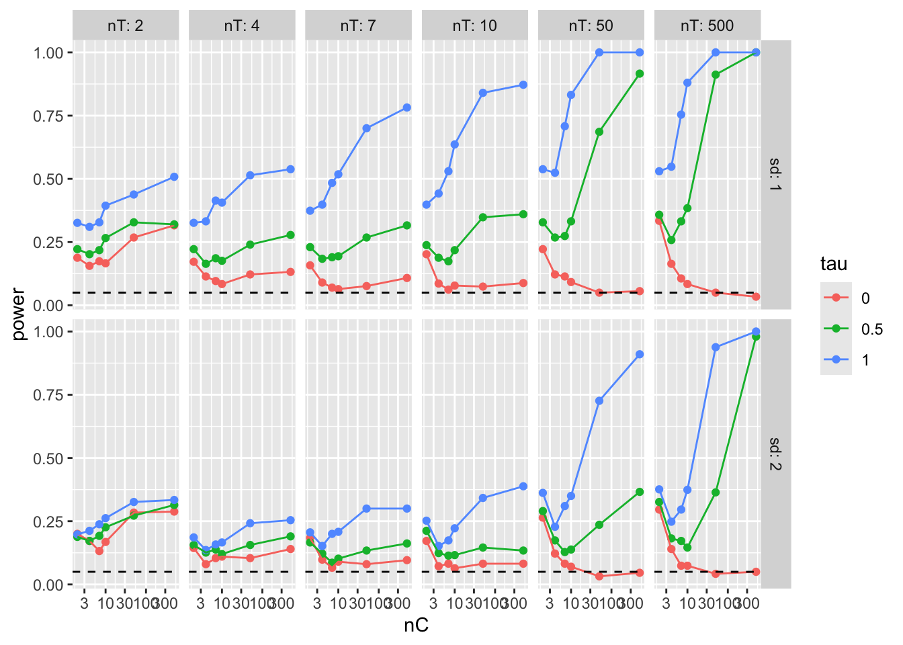
Note: We are seeing elevated rejection rates under the null for small and even moderate sample size! We can zoom in on specific simulations run, to get some more detail such as estimated power under the null for larger groups. Here we check and we are seeing rejection rates of around 0.05, which is what we want.
filter( exp.res, tau==0, nT >= 50, nC >= 50 )# A tibble: 8 × 10
E.tau.hat E.SE.hat ES power nC nT sd tau mu R
<dbl> <dbl> <fct> <dbl> <dbl> <dbl> <dbl> <fct> <dbl> <dbl>
1 0.0136 0.200 0 0.05 50 50 1 0 5 500
2 0.00293 0.148 0 0.056 500 50 1 0 5 500
3 -0.0108 0.148 0 0.05 50 500 1 0 5 500
4 -0.00485 0.0634 0 0.034 500 500 1 0 5 500
5 -0.00697 0.399 0 0.032 50 50 2 0 5 500
6 -0.0152 0.295 0 0.046 500 50 2 0 5 500
7 -0.0104 0.295 0 0.042 50 500 2 0 5 500
8 0.00524 0.127 0 0.05 500 500 2 0 5 500We can get fancy and look at rejection rate (power under tau = 0) as a function of both nC and nT using a contour-style plot:
exp.res.rej <- exp.res %>% filter( tau == 0 ) %>%
group_by( nC, nT ) %>%
summarize( power = mean( power ) )`summarise()` has grouped output by 'nC'. You can override using the `.groups`
argument.exp.res.rej = mutate( exp.res.rej, power = round( power * 100 ) )ggplot( filter( exp.res.rej ), aes( x=nC, y=nT ) ) +
geom_contour( aes( z=power ), col="darkgrey" ) +
scale_x_log10() + scale_y_log10() +
geom_tile( aes( fill=power ) ) +
scale_fill_gradient( trans="log")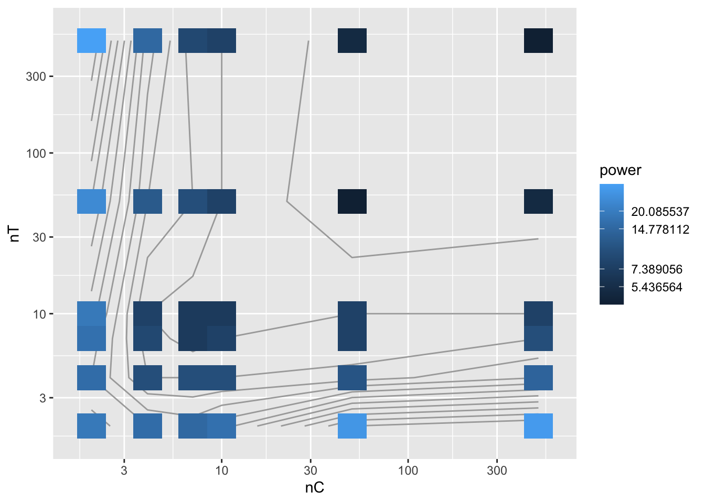
Admittidly, this plot needs some work to really show the areas with rejection rates of well above 0.05. But we see that small tx or co groups are both bad here.
Looking at main effects
We can ignore a factor and just look at another. This is looking at the main effect or marginal effect of the factor.
The easy way to do this is to let ggplot smooth our individual points on a plot. Be sure to also plot the individual points to see variation, however.
ggplot( exp.res, aes( x=nC, y=power, group=tau, col=tau ) ) +
facet_grid( sd ~ ., labeller=label_both ) +
geom_jitter( width=0.02, height=0 ) +
geom_smooth( se = FALSE ) +
scale_x_log10( breaks=nC) +
geom_hline( yintercept=0.05, col="black", lty=2)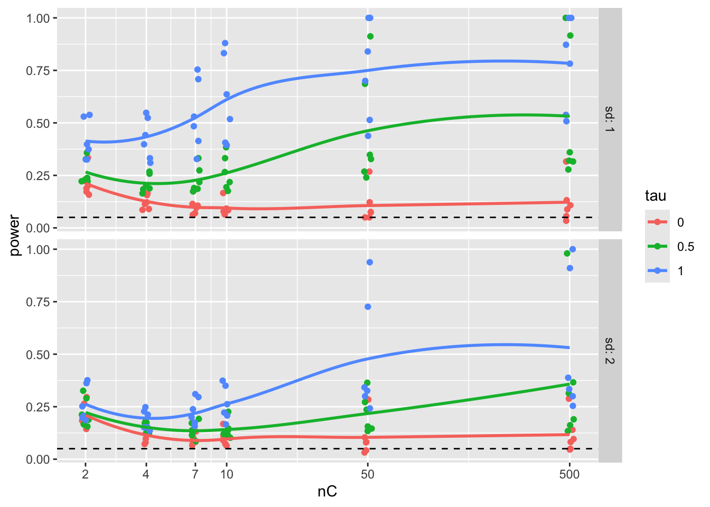
Note how we see our individual runs that we marginalize over.
To look at our main effects we can also summarize our results, averaging our experimental runs across other factor levels. For example, in the code below we average over the different treatment group sizes and standard deviations, and plot the marginalized results.
To marginalize, we group by the things we want to keep. summarise() then averages over the things we want to get rid of.
exp.res.sum = exp.res %>% group_by( nC, tau ) %>%
summarise( power = mean( power ) )`summarise()` has grouped output by 'nC'. You can override using the `.groups`
argument.head( exp.res.sum )# A tibble: 6 × 3
# Groups: nC [2]
nC tau power
<dbl> <fct> <dbl>
1 2 0 0.211
2 2 0.5 0.245
3 2 1 0.339
4 4 0 0.118
5 4 0.5 0.180
6 4 1 0.307ggplot( exp.res.sum, aes( x=nC, y=power, group=tau, col=tau ) ) +
geom_line() + geom_point() +
scale_x_log10( breaks=nC) +
geom_hline( yintercept=0.05, col="black", lty=2)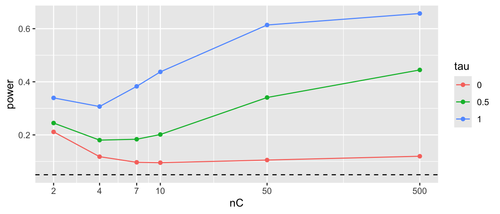
We can try to get clever and look at other aspects of our experimental runs. The above suggests that the smaller of the two groups is dictating things going awry, in terms of elevated rejection rates under the null. We can also look at things in terms of some other more easily interpretable parameter (here we switch to effect size instead of raw treatment effect).
Given this, we might decide to look at total sample size or the smaller of the two groups sample size and make plots that way (we are also subsetting to just the sd=1 cases as there is nothing interesting in both, really):
exp.res <- exp.res %>% mutate( n = nC + nT,
n.min = pmin( nC, nT ) )ggplot( filter( exp.res, sd==1 ), aes( x=n, y=power, group=ES, col=ES ) ) +
geom_jitter( width=0.05, height=0) +
geom_smooth( se = FALSE) +
scale_x_log10() +
geom_hline( yintercept=0.05, col="black", lty=2)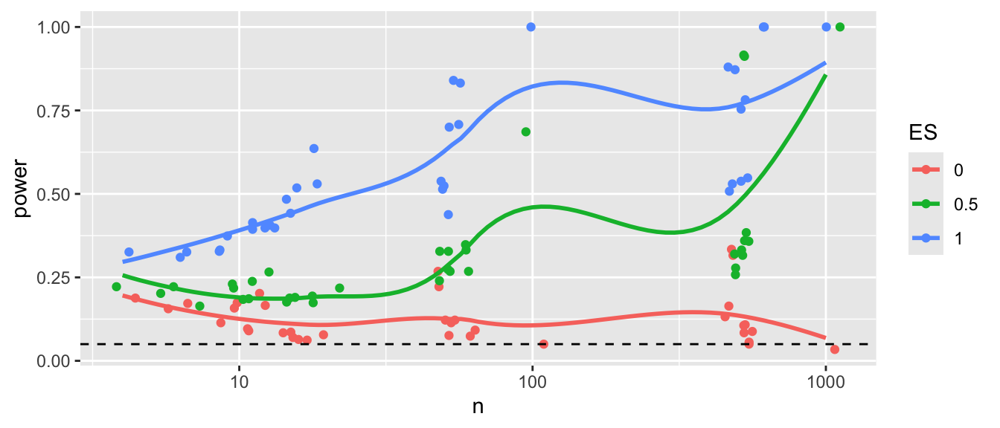
ggplot( filter( exp.res, sd==1 ), aes( x=n.min, y=power, group=ES, col=ES ) ) +
geom_jitter( width=0.05, height=0) +
geom_smooth( se = FALSE) +
scale_x_log10() +
geom_hline( yintercept=0.05, col="black", lty=2)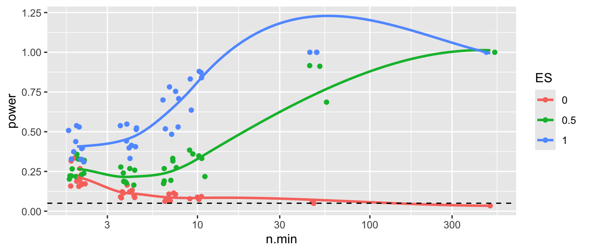
Note the few observations out in the high n.min region for the second plot—this plot is a bit strange in that the different levels along the x-axis are assymetric with respect to each other. It is not balanced.
Addendum: Saving more details
Our exp.res dataframe from above has all our simulations, one simulation per row, with our measured outcomes. This is ideally all we need to analyze.
That being said, sometimes we might want to use a lot of disk space and keep much more. In particular, each row of exp.res corresponds to the summary of a whole collection of individual runs. We might instead store all of these runs.
To do this we just take the summarizing step out of our run.experiment()
run.experiment.raw = function( nC, nT, sd, tau, mu = 5, R = 500 ) {
eres = plyr::rdply( R, run.one( nC, nT, sd, tau, mu ) )
eres <- mutate( eres, nC=nC, nT=nT, sd=sd, tau=tau, mu=mu, R=R )
eres
}Each call to run.experiment.raw() gives one row per run. We replicate our simulation parameters for each row.
run.experiment.raw( 10, 3, 1, 0.5, R=4 ) .n tau.hat ES SE.hat z p.value nC nT sd tau mu R
1 1 -0.07554637 0.5 0.6436651 -0.1173690 0.90656761 10 3 1 0.5 5 4
2 2 0.35434190 0.5 0.2658501 1.3328637 0.18257653 10 3 1 0.5 5 4
3 3 0.74320939 0.5 0.7667972 0.9692385 0.33242621 10 3 1 0.5 5 4
4 4 1.46389038 0.5 0.8585763 1.7050207 0.08819057 10 3 1 0.5 5 4The advantage of this is we can then generate new outcome measures, as they occur to us, later on. The disadvantage is this result file will be \(R\) times as many rows as the older file, which can get quite, quite large.
But disk space is cheap! Here we run the same experiment with our more complete storage. Note how the pmap_df stacks the multiple rows from each run, giving us everything nicely bundled up:
exp.res.full <- experiments %>% pmap_df( run.experiment.raw, R=500 )
head( exp.res.full ) .n tau.hat ES SE.hat z p.value nC nT sd tau mu R
1 1 1.3499219 0 0.6935041 1.9465232 0.05159192 2 2 1 0 5 500
2 2 0.1328264 0 0.6912747 0.1921470 0.84762704 2 2 1 0 5 500
3 3 0.6294022 0 0.4767536 1.3201833 0.18677382 2 2 1 0 5 500
4 4 -0.5046979 0 0.7914141 -0.6377166 0.52365819 2 2 1 0 5 500
5 5 -0.4000069 0 0.3771614 -1.0605724 0.28888426 2 2 1 0 5 500
6 6 1.4912099 0 0.5933181 2.5133397 0.01195941 2 2 1 0 5 500We end up with a lot more rows:
nrow( exp.res.full )[1] 108000nrow( exp.res )[1] 216We next save our results:
write_csv( exp.res.full, "simulation_results_full.csv" )Compare the file sizes: one is several k, the other is around 12 megabytes.
file.size("simulation_results.csv") / 1024[1] 13.4541file.size("simulation_results_full.csv") / 1024[1] 10556.33Getting results ready for analysis
If we generated raw results then we need to collapse them by experimental run before analyzing our results so we can explore the trends across the experiments. We do this by borrowing the summarise code from inside run.experiment():
exp.res.sum <- exp.res.full %>%
group_by( nC, nT, sd, tau, mu ) %>%
summarise( R = n(),
E.tau.hat = mean( tau.hat ),
SE = sd( tau.hat ),
E.SE.hat = mean( SE.hat ),
ES = mean( ES ),
power = mean( p.value <= 0.05 ) )`summarise()` has grouped output by 'nC', 'nT', 'sd', 'tau'. You can override
using the `.groups` argument.Note how I added an extra estimation of the true \(SE\), just because I could! This is an easier fix, sometimes, than running all the simulations again after changing the run.experiment() method.
The results of summarizing during the simulation vs. after as we just did leads to the same place, however, although the order of rows in our final dataset are different (and we have a tibble instead of a data.frame, a consequence of using the tidyverse, but this is not something to worry about):
head( exp.res.sum )# A tibble: 6 × 11
# Groups: nC, nT, sd, tau [6]
nC nT sd tau mu R E.tau.hat SE E.SE.hat ES power
<dbl> <dbl> <dbl> <dbl> <dbl> <int> <dbl> <dbl> <dbl> <dbl> <dbl>
1 2 2 1 0 5 500 -0.0603 0.927 0.899 0 0.164
2 2 2 1 0.5 5 500 0.544 0.996 0.879 0.5 0.25
3 2 2 1 1 5 500 1.10 0.990 0.910 1 0.324
4 2 2 2 0 5 500 0.0924 1.89 1.77 0 0.168
5 2 2 2 0.5 5 500 0.552 1.98 1.76 0.25 0.202
6 2 2 2 1 5 500 0.907 1.98 1.75 0.5 0.232nrow( exp.res.sum )[1] 216nrow( exp.res )[1] 216Simulation 3: Comparing Estimators for the Mean via Simulation
The above ideas readily extend to when we wish to compare different forms of estimator for estimating the same thing. We still generate data, evaluate it, and see how well our evaluation works. The difference is we now evaluate it multiple ways, storing how the different ways work.
For our simple working example we are going to compare estimation of the center of a symmetric distribution via mean, trimmed mean, and median (so the mean and median are the same).
We are going to break this down into lots of functions to show the general framework. This framework can readily be extended to more complicated simulation studies.
For our data-generation function we will use the scaled \(t\)-distribution so the standard deviation will always be 1 but we will have different fatness of tails (high chance of outliers):
gen.data = function( n, df0 ) {
rt( n, df=df0 ) / sqrt( df0 / (df0-2) )
}The variance of a \(t\) is \(df/(df-2)\), so if we divide our observations by the square root of this, we will standardize them so they have unit variance. See, the standard deviation is 1 (up to random error, and as long as df0 > 2)!:
sd( gen.data( 100000, df0 = 3 ) )[1] 0.9707252We next define the parameter we want (this, the mean, is what we are trying to estimate):
mu = 0Our analysis methods bundled in a function. We return a vector of the three estimates:
analyze.data = function( data ) {
mn = mean( data )
md = median( data )
mn.tr = mean( data, trim=0.1 )
data.frame( mean = mn, trim.mean=mn.tr, median=md )
}Let’s test:
dt = gen.data( 100, 3 )
analyze.data( dt ) mean trim.mean median
1 -0.0662128 -0.02265389 -0.00342853To evaluate, do a bunch of times, and assess results. Let’s start by looking at a specific case. We generate 1000 datasets of size 10, and estimate the center using our three different estimators.
raw.exps <- plyr::rdply( 1000, {
dt = gen.data( n=10, df0=5 )
analyze.data( dt )
} )We now have 1000 estimates for each of our estimators:
head( raw.exps ) .n mean trim.mean median
1 1 -0.3643085 -0.3161528 -0.1821785
2 2 0.2208693 0.2720500 0.1476562
3 3 -0.2015714 -0.1972242 -0.2469177
4 4 -0.4957721 -0.4494758 -0.5001300
5 5 0.2356779 0.2288045 0.2512351
6 6 -0.7343158 -0.8612693 -0.8897607We then want to assess estimator performance for each estimator. We first write a function to calculate what we want from 1000 estimates:
estimator.quality = function( estimates, mu ) {
RMSE = sqrt( mean( (estimates - mu)^2 ) )
bias = mean( estimates - mu )
c( RMSE=RMSE, bias=bias, SE=sd( estimates ) )
}
estimator.quality( raw.exps$mean, mu ) RMSE bias SE
0.32752456 -0.01001258 0.32753529 We now borrow another oldie-but-goodie from the plyr package. The function ldply is a transforming function that takes a list (l) and for everything in the list calls a given function. It packs up the results as a dataframe (d). For the record, llply would return everything as a list, ddply would take a dataframe and return a dataframe, and so forth. For us, raw.exps[-1] is a list of vectors, i.e., all the columns (except the first) of our dataframe of simulations. (Remember that a dataframe is a list of the variables in the dataframe.)
plyr::ldply( raw.exps[-1], estimator.quality, mu = mu, .id = "estimator" ) estimator RMSE bias SE
1 mean 0.3275246 -0.01001258 0.3275353
2 trim.mean 0.3022328 -0.01145742 0.3021667
3 median 0.3224429 -0.02024546 0.3219677Note the mu = 0 line after estimator.quality. We can pass extra arguments to the function by putting them after the function name. The function will take as its first argument the elements from the raw.exps[-1] list.
Aside: There is probably a nice way to do this in the dplyr package, but I don’t know what it is.
To continue, we pack up the above into a function, as usual. Our function takes our two parameters of sample size and degrees of freedom, and returns a data frame of results.
one.run = function( n, df0 ) {
raw.exps <- plyr::rdply( 1000, {
dt = gen.data( n=n, df0=df0 )
analyze.data( dt )
} )
rs <- plyr::ldply( raw.exps[-1], estimator.quality, mu = 0, .id = "estimator" )
rs
}Our function will take our two parameters, run a simulation, and give us the results. We see here that none of our estimators are particularly biased and the trimmed mean has, possibly, the smallest RMSE, although it is a close call.
one.run( 10, 5 ) estimator RMSE bias SE
1 mean 0.3123910 0.008551253 0.3124302
2 trim.mean 0.2907892 0.004243402 0.2909037
3 median 0.3108435 -0.005310858 0.3109537Ok, now we want to see how sample size impacts our different estimators. If we also vary degrees of freedom we have a three-factor experiment, where one of the factors is our estimator itself. We are going to use a new clever trick. As before, we use pmap(), but now we store the entire dataframe of results we get back from our function in a new column of our original dataframe. See R for DS, Chapter 25.3. This trick works best if we have everything as a tibble which is basically a dataframe that prints a lot nicer and doesn’t try to second-guess what you are up to all the time.
ns = c( 10, 50, 250, 1250 )
dfs = c( 3, 5, 15, 30 )
lvls = expand.grid( n=ns, df=dfs )
# So it stores our dataframe results in our lvls data properly.
lvls = as_tibble(lvls)
results <- lvls %>% mutate( results = pmap( lvls, one.run ) )We have stored our results (a bunch of dataframes) in our main matrix of simulation runs.
head( results )# A tibble: 6 × 3
n df results
<dbl> <dbl> <list>
1 10 3 <df [3 × 4]>
2 50 3 <df [3 × 4]>
3 250 3 <df [3 × 4]>
4 1250 3 <df [3 × 4]>
5 10 5 <df [3 × 4]>
6 50 5 <df [3 × 4]>The unnest() function will unpack our dataframes and put everything together, all nice like. See (hard to read) R for DS Chapter 25.4.
results <- unnest( results )Warning: `cols` is now required when using `unnest()`.
ℹ Please use `cols = c(results)`.results# A tibble: 48 × 6
n df estimator RMSE bias SE
<dbl> <dbl> <fct> <dbl> <dbl> <dbl>
1 10 3 mean 0.306 -0.0120 0.306
2 10 3 trim.mean 0.252 -0.00971 0.252
3 10 3 median 0.256 -0.00554 0.256
4 50 3 mean 0.140 -0.00332 0.140
5 50 3 trim.mean 0.105 0.000498 0.105
6 50 3 median 0.114 0.00123 0.114
7 250 3 mean 0.0648 -0.00331 0.0647
8 250 3 trim.mean 0.0473 -0.00244 0.0473
9 250 3 median 0.0500 -0.00130 0.0500
10 1250 3 mean 0.0291 -0.000686 0.0291
# ℹ 38 more rowsAnd plot:
ggplot( results, aes(x=n, y=RMSE, col=estimator) ) +
facet_wrap( ~ df, nrow=1 ) +
geom_line() + geom_point() +
scale_x_log10( breaks=ns )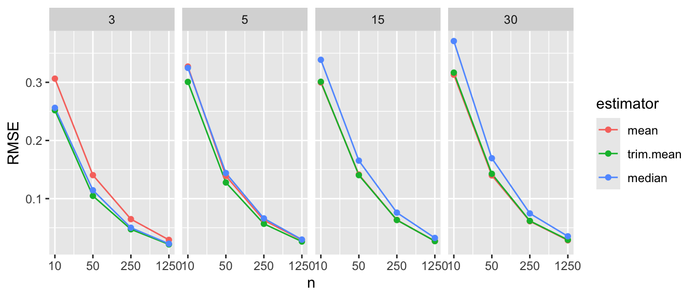
The above doesn’t show differences clearly because all the RMSE goes to zero. It helps to log our outcome, or otherwise rescale. The logging version shows differences are relatively constant given changing sample size.
ggplot( results, aes(x=n, y=RMSE, col=estimator) ) +
facet_wrap( ~ df, nrow=1 ) +
geom_line() + geom_point() +
scale_x_log10( breaks=ns ) +
scale_y_log10()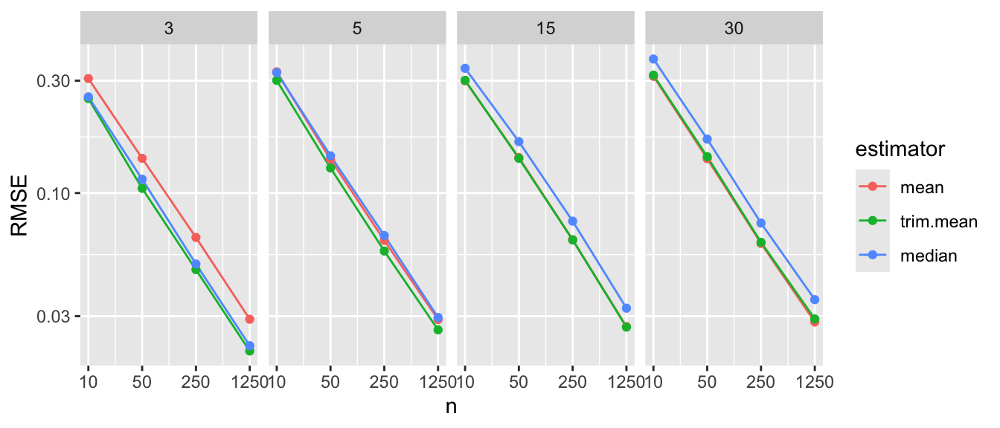
Better is to rescale using our knowledge of standard errors. If we scale by the square root of sample size, we should get horizontal lines. We now clearly see the trends.
results <- mutate( results, scaleRMSE = RMSE * sqrt(n) )ggplot( results, aes(x=n, y=scaleRMSE, col=estimator) ) +
facet_wrap( ~ df, nrow=1) +
geom_line() + geom_point() +
scale_x_log10( breaks=ns )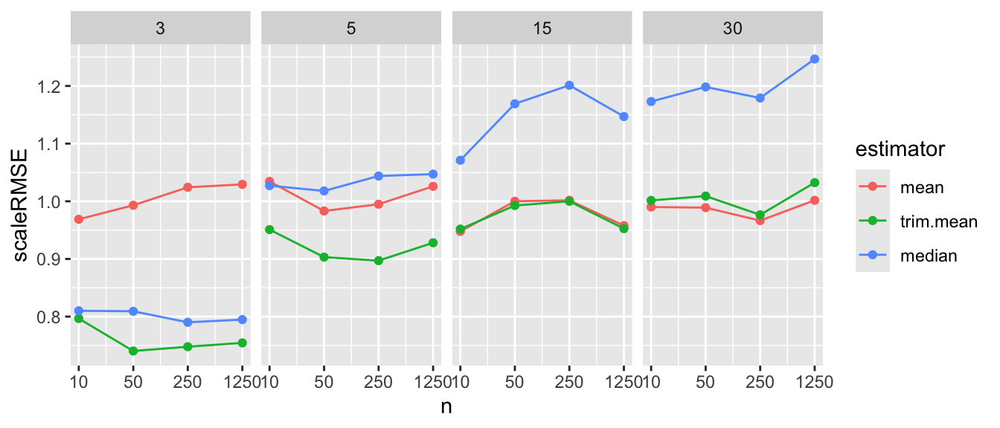
Overall, we see the scaled error of the mean it is stable across the different distributions. The trimmed mean is a real advantage when the degrees of freedom are small. We are cropping outliers that destabilize our estimate which leads to great wins. As the distribution grows more normal, this is no longer an advantage and we get closer to the mean in terms of performance. Here we are penalized slightly bye having dropped 10% of our data, so the standard errors will be slightly larger.
The median is not able to take advantage of the nuances of a data set because it is entirely determined by the middle value. When outliers cause real concern, this cost is minimal. When outliers are not a concern, the median is just worse.
Overall, the trimmed mean seems an excellent choice: in the presence of outliers it is far more stable than the mean, and when there are no outliers the cost of using it is small.
In terms of thinking about designing simulation studies, we see clear visual displays of simulation results can tell very clear stories. Eschew complicated tables with lots of numbers.
Extension: The Bias-variance tradeoff
We can use the above simulation to examine these same estimators when we the median is not the same as the mean. Say we want the mean of a distribution, but have systematic outliers. If we just use the median, or trimmed mean, we might have bias if the outliers tend to be on one side or another. For example, consider the exponential distribution:
nums = rexp( 100000 )
mean( nums )[1] 0.9961883mean( nums, trim=0.1 )[1] 0.8281408median( nums )[1] 0.6887303Our trimming, etc., is biased if we think of our goal as estimating the mean. But if the trimmed estimators are much more stable, we might still wish to use them. Let’s find out.
Let’s generate a mixture distribution, just for fun. It will have a nice normal base with some extreme outliers. We will make sure the overall mean, including the outliers, is always 1, however. (So our target, \(\mu\) is now 1, not 0.)
gen.dat = function( n, prob.outlier = 0.05 ) {
nN = rbinom( 1, n, prob.outlier )
nrm = rnorm( n - nN, mean=0.5, sd=1 )
outmean = (1 - (1-prob.outlier)/2) / prob.outlier
outs = rnorm( nN, mean=outmean, sd=10 )
c( nrm, outs )
}Let’s look at our distribution
Y = gen.dat( 10000000, prob.outlier = 0.05 )
mean( Y )[1] 0.9982636sd( Y )[1] 3.264725hist( Y, breaks=30, col="grey", prob=TRUE )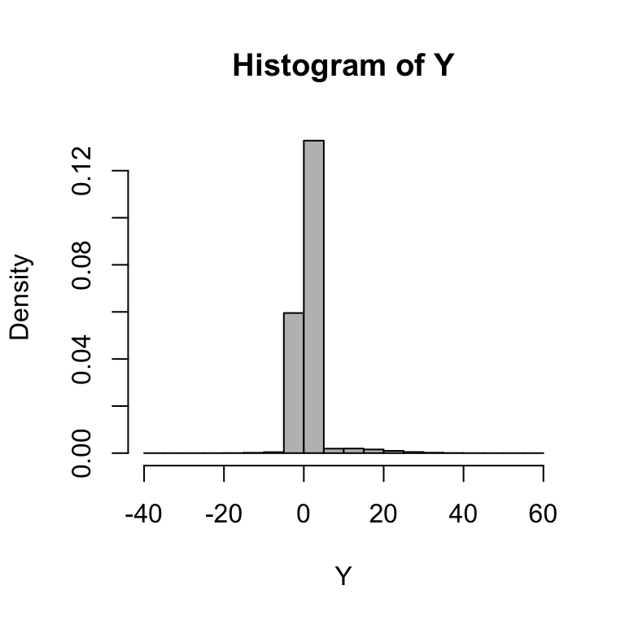
We steal the code from above, modifying it slightly for our new function and changing our target parameter from 0 to 1:
one.run.exp = function( n ) {
raw.exps <- plyr::rdply( 1000, {
dt = gen.dat( n=n )
analyze.data( dt )
} )
rs <- plyr::ldply( raw.exps[-1], estimator.quality, mu = 1, .id = "estimator" )
rs
}
res = one.run.exp( 100 )
res estimator RMSE bias SE
1 mean 0.3389828 -0.009172976 0.3390283
2 trim.mean 0.4563278 -0.442502881 0.1115289
3 median 0.4762054 -0.458272445 0.1295173And for our experiment we vary the sample size
ns = c( 10, 20, 40, 80, 160, 320 )
lvls = tibble( n=ns )results <- lvls %>% mutate( results = pmap( lvls, one.run.exp ) ) %>% unnest()Warning: `cols` is now required when using `unnest()`.
ℹ Please use `cols = c(results)`.head( results )# A tibble: 6 × 5
n estimator RMSE bias SE
<dbl> <fct> <dbl> <dbl> <dbl>
1 10 mean 1.01 -0.0364 1.01
2 10 trim.mean 0.651 -0.374 0.533
3 10 median 0.595 -0.456 0.382
4 20 mean 0.712 -0.0582 0.710
5 20 trim.mean 0.527 -0.445 0.283
6 20 median 0.560 -0.483 0.284Here we are going to plug multiple outcomes. Often with the simulation study we are interested in different measures of performance. For us, we want to know the standard error, bias, and overall error (RMSE). To plot this we first gather our outcomes to make a long form dataframe of results:
res2 = gather( results, RMSE, bias, SE, key="Measure",value="value" )
res2 = mutate( res2, Measure = factor( Measure, levels=c("SE","bias","RMSE" )))And then we plot, making a facet for each outcome of interest:
ggplot( res2, aes(x=n, y=value, col=estimator) ) +
facet_grid( . ~ Measure ) +
geom_hline( yintercept=0, col="darkgrey" ) +
geom_line() + geom_point() +
scale_x_log10( breaks=ns ) +
labs( y="" )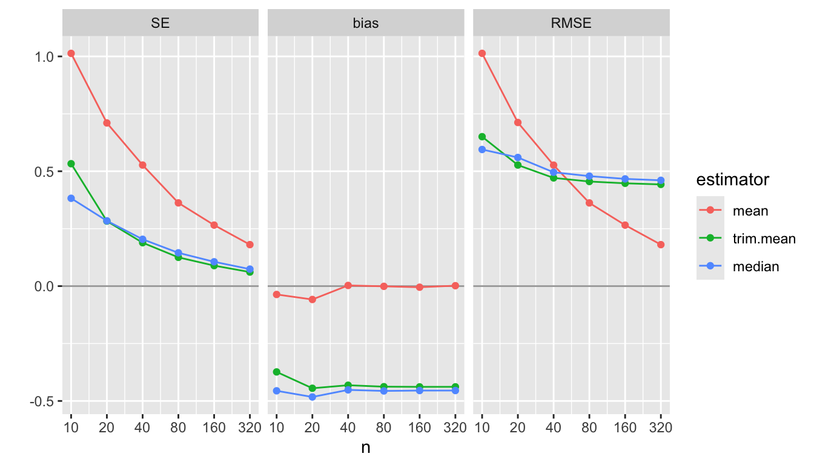
We see how different estimators have different biases and different uncertainties. The bias is negative for our trimmed estimators because we are losing the big outliers above and so getting answers that are too low.
The RMSE captures the trade-off in terms of what estimator gives the lowest overall error. For this distribution, the mean wins as the sample size increases because the bias basically stays the same and the SE drops. But for smaller samples the trimming is superior. The median (essentially trimming 50% above and below) is overkill and has too much negative bias.
From a simulation study point of view, notice how we are looking at three different qualities of our estimators. Some people really care about bias, some care about RMSE. By presenting all results we are transparent about how the different estimators operate.
Next steps would be to also examine the associated estimated standard errors for the estimators, seeing if these estimates of estimator uncertainty are good or poor. This leads to investigation of coverage rates and similar.